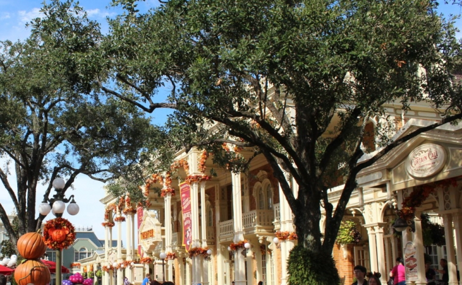

.png)
.PNG)
.PNG)
.PNG)
.PNG)
.PNG)
.JPG)
.JPG)
.PNG)
.PNG)


What???¬†Yet another Halloween post??¬†Well…what do you do when you love Halloween (the cute and silly stuff – not the gory things) and you are a major¬†Disney fan? ¬†Why, you go to the Magic Kingdom for Mickey’s Not So Scary Halloween Party, that’s what!
With our daughter working there, it made the perfect time for us to plan a trip. ¬†We decided to take both my mother and my husband’s mother for a short 2 park vacation a few weeks ago. ¬†If you have not been for the Halloween party, you may not know that it is a separate ticketed event that does not require a park entrance ticket. ¬†Because you can enter the park at 4:00 (and stay until midnight!) with this ticket, it made sense to do the party on our arrival day and not use an expensive day’s admission for only a partial day in the park.
We entered right at 4:00, got our armband for the party, and made our way down Main Street. ¬†The Magic Kingdom was decorated for the season with a large supply of pumpkins and fall colors. (I think they were copying me. LOL) Of course I made our crew stop in front of Cinderella Castle for a photo. üôÇ

You can wear actual costumes (as long as you follow Disney’s rules) for the Halloween party, and there were many people who did the night we were there. ¬†I had purchased Ghostbusters costumes for everyone, but my husband was not too keen on the idea. ¬†Plus with the Florida heat and humidity, it made more sense for us to just wear matching t-shirts (so the Ghostbusters went back to the store. ¬†üôÅ ) Our glow-in-the-dark Mickey skeleton shirts (from Target) worked out great, and we saw a number of other people in those same matching shirts.
I had made Fastpass reservations for our first few rides. ¬†We began with the Jungle Cruise then moved on to my favorite after that – The Haunted Mansion. üôÇ ¬†Perfect for a Halloween party night!
(They were doing renovation work on the exterior, so I am borrowing the above photo so you can see it better.)
Now these are a few of mine.
¬†And if you would like to enjoy the entire spooky experience, watch the video below. üôÇ
After the Haunted Mansion, our next stop was Pirates of the Caribbean (another good one for Halloween!) Click on the link below the photo, and you will find a video that takes you on this ride as well.
Remember we entered the park at 4:00 so when we finished our Pirate ride, we headed back to Main Street for dinner.  Along the way we passed a small fun parade.
Over on Main Street we enjoyed a nice sit-down dinner at The Plaza restaurant.
Being the snack-er that I am, I really loved their loaded fries!
And my mother-in-law enjoyed her dinner with a rootbeer float. üôÇ
It was getting close to sunset but not yet time to find a spot to view the Halloween parade, so we decided to walk over to Tomorrowland and ride The Peoplemover (a few times!) and Buzz Lightyear, Space Ranger.
The real “party” begins at 7:00 when the sun goes down. ¬†That is when guests who have not purchased tickets must leave the park (and yes, Disney cast members do check to make sure you have on an armband.) ¬†The park takes on a different mood after dark…more Halloween-ish. üôÇ
7:00 is also when dance parties begin in several locations and everyone of any age can begin meeting characters and trick-or-treating.  Disney gives out tons of candy on these party nights! But better than all the candy to me is the parade, led by the Headless Horseman.
Instead of their typical princess characters, this parade features villains…
and spooky characters from the Haunted House.
(The ballroom dancers were my favorite. üôÇ )
You can watch highlights from the parade in the video here (and get that darn song stuck in your head!)  The ballroom dancers are near the 2 minute mark in it.
Besides the character meet-and-greets, trick-or-treating, dance parties, and the parade, there is also a Hocus Pocus stage show on these special event nights. ¬†If you are a fan of the movie, you won’t want to miss this! (I gave a homework assignment to my mom and mother-in-law to watch the movie before we went. üôÇ )
But the biggest highlight of the evening is the fireworks show at 10:15- possibly the best they do at Walt Disney World, and this fireworks spectacular is only done for Mickey’s Not So Scary Halloween Party.
They really are amazing set off behind the castle…
but then…
they darken it…
and the grand finale is 360 degrees of fireworks exploding all the way around the park!
An amazing experience!
(and impossible to photograph while you’re swiveling your head around like someone from The Exorcist. üôÇ )
Our daughter was able to join us for the show when she finished her job that night, so we took a group photo after the fireworks were over.
And after the fireworks, many many people left the park (including us.) ¬†But remember the Magic Kingdom is still open until midnight for the Halloween party, and that last hour or so is the perfect time to enjoy all the rides with little to no crowds. ¬†Most rides are virtually walk-on at that point (or you can continue trick-or-treating if you would rather get more candy. üôÇ )
We were there on a Thursday night in late September, so the crowds were not bad at all. ¬†I understand that the later dates in October have very large crowds. ¬†I loved the Halloween party and hope we will go back again next year at the same time, or perhaps the first week in October. But I want to stay until midnight when we go again (for the rides, not the candy. üôÇ )
Thanks for popping in here for a visit!  I hope you have had a fun and sweet Halloween, and thank you to all of you who read the post on our Halloween house decorations and left your kind compliments in the comments today.  You all are the best blog readers out there!
Happy haunting on this Halloween night. üôÇ
Until next time…


.PNG)
I know you had a grand time! Lucky to have your Moms and they are lucky to have you and hubby. Not to mention, your lucky daughter! What company.
Thanks for sharing Disney.
Now I have been thinking about your gingerbread houses. Guess what was at the bottom of this post, your dining room from last year. So I checked it out. YES, still like it. Good as I remembered. So in your busy life give us a post SOON on how to make them/buy them. I am not crafty. So I will need lots of time. Where do I order a kit, what is the best way for me to have JUST ONE? Please, and thank you.
Even better, give us 12 things we should be doing now to prepare for Christmas and make the gingerbread house HOW TO one on the list. I know you are a teacher at heart.
Waiting for your next post.
What fun you must have had! And how wonderful your mothers were able to go too. I’m sure they had a fabulous time. üôÇ It’s been years since we’ve been to Disney. All my memories are hot and crowded it was. It looks like this would be a great time to go. I’m sure you’re planning a Christmas trip too. It would be very festive in December. Your pictures of the fireworks turned out well and I love your adorable (er, I mean handsome for your husband üòâ ) tee shirts!
Kelly – I may just have to go next year. Haven’t been to Disney in probably 20+ years, but you inspire me. So glad you had something fun planned for your mother in law. Hope she is doing well. Love your posts.
I hope your mother in law is doing well. The holidays will be tough for her and y’all this year. I remember taking my mother in law on a vacation with us shortly after my father in law passed. New territory. The group shot was adorable.
Kelly,
I’m so happy you shared this…our California kids and our 2 year old granddaughter went to this event for her birthday (at our Disneyland). Our son was Smee, our daughter in law mommy was Peter Pan and our birthday girl went as Captain Hook. (all from Jake and the Neverland Pirates cartoon show). They took so few pictures! Kids! So thanks for the more extensive tour. üôÇ
xo,
Karen
How fun…I felt like I was there. I bet all our Grands would LOVE this. I never thought about Disney doing something like this for Halloween, duh, this is really great. When does the Halloween start there since you went in Sept.?
Oh, this would be so much fun! I love a Mickey-not-so-scarey Hallowe’en, it’s beautiful. Your t-shirts were just perfect for the event. Loved seeing the photo of you all. that’a a real treat!
Thank you Kelly for the trip around Disney World. I have only been to Disney World once, but I have been to Disneyland 5 times. John took me to Disneyland on our honeymoon 26 years ago, and, despite the jet lag, after the first ride I was hooked. Of course, Disneyland is closer to Australia than Disney World. My absolute favourite ride was the California Soaring ride in the California Dreaming Park. We were discussing our favourite Disney rides the other day, and I think I like the Pirates of the Caribbean ride the best, but it is very hard to decide, I really do love them all.
Kelly, your photos are wonderful! No one does holidays like Disney! I’m expecting a new grandchild soon, and I can’t wait to get my yearly pass to Disney so we both can enjoy all these fabulous celebrations . Makes me glad I’m only a few hours away from the “happiest place on earth”.
Thanks for this trip! My family insists I could not handle Disney World, so I guess I’ll never be there. This post made me feel as though I were there, without all the walking and heat! Must be fun there at the holiday times! Your daughter is so lucky to work there, and she’s perfect for it! Is she still doing the same character?
Yay! Love the Kingdom during the holidays — used to go to this event every year with my girls and we dressed up every year! So much fun and the evenings were cooler and we loved the errieness of all the decorations and the candy too! So glad you got to go and take the mothers!! And you got to see your baby girl! Loved the family picture!! Once again I felt the Magic of the Kingdom!! And if you haven’t been there at Christmas– you need to do that and The Christmas party and all the extra things they do!! All the seasons there are grand!! Just viewing all your pictures have made my Halloween– while I prepared apple pie and pumpkin bread — best friends are coming tomorrow– carpets/floors being cleaned early in the morning!! And I will be done with the endless summer of projects!! November is a few hours away and All Saints Day!! Bring on the holidays!! I’m ready and feeling healthy!üíïüéÉüçÇüçÅüëª Love you, Kelly!
What a fun time to go to Disney. I will have to pass this info on to family – and maybe I will even get to go! I have never been. A lifelong dream!
Thanks!
I have a young friend who went to the California version of this in early October and had quite large crowds with long waits for the rides. Maybe September is better? Your evening sounds very fun, however!
The happiest place on earth! Awesome photos, Kelly – looks and sounds like you all had an awesome time! Thanks for sharing. I’ve been six times, but never for Halloween – will add it to the bucket list :).
thanks for doing this post and letting us know about this party. My sister moved to Orlando 4 years ago because she loves Disney World so much. She finally went to work there a year or so ago and loves it more than ever! We will be going down next year for this party, which we weren’t aware of. I hate crowds and she’s only asking us to come, so this will be perfect.